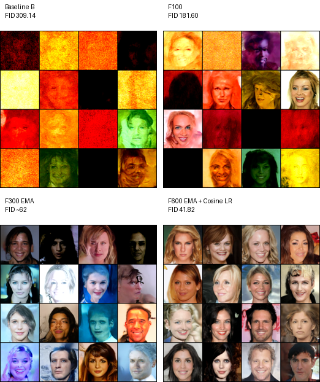

Project Summary
The project implements a Denoising Diffusion Probabilistic Model inspired by Ho et al. 2020. Training learns to predict Gaussian noise added to real face images, while generation starts from noise and iteratively denoises into a face.
How It Works
A DDPM does not generate a complete image in one pass. It learns the reverse of a fixed noising process, then repeatedly applies the learned denoiser at inference.
Load and normalize images
Datasets resize face images, apply augmentation, convert them to
tensors, and normalize pixels into [-1, 1].
Add controlled noise
q_sample picks a random timestep and mixes the clean
image with Gaussian noise using precomputed alpha values.
Predict the noise
The U-Net receives x_t and timestep embeddings, then
outputs predicted noise with the same shape as the image.
Denoise into samples
Generation starts from random noise and runs the reverse process
from T-1 down to 0.
Architecture
The model is a time-conditioned U-Net built from residual blocks, self-attention, downsampling, upsampling, and skip connections. Optional text embeddings are folded into the same conditioning stream as timestep embeddings.
Noise Schedule
models/noise_schedule.py precomputes beta, alpha,
cumulative alpha, square-root terms, and posterior variance. The
default schedule is linear from 1e-4 to
0.02.
U-Net Denoiser
models/unet.py predicts noise for RGB images. It uses
sinusoidal timestep embeddings, residual blocks, attention at
selected resolutions, and decoder skip connections.
Prompt Conditioning
The repo supports a simple trainable prompt encoder or a frozen CLIP text encoder. Classifier-free guidance is enabled through caption dropout and generation-time guidance scale.
Generated Samples
The repository already contains generated grids from multiple experiments. These images are referenced directly from local project folders, so this page stays portable inside the repo.
Qualitative Results
The figure below shows the progression of generated samples across major experiments. As training duration increased and stabilisation techniques such as EMA and cosine learning rate scheduling were introduced, image quality improved substantially, with clearer facial structure, better symmetry, and fewer visible artifacts.

Experiment Results
The main experimental chain was run at 128px, using the 2700-image restricted training setup unless otherwise stated. The 64px experiments were separate resolution/scale checks and should not be treated as part of the main 128px progression.
Best result from the main restricted-dataset 128px experiment chain.
Separate 64px experiment. Strong FID, but lower resolution makes the task easier and less visually detailed.
Full Experiment Table
| Experiment | Configuration | FID | Track / Interpretation |
|---|---|---|---|
| B | 128px, ch64, batch 1, 20 epochs | 309.14 | Main 128px chain Early baseline. |
| C | 128px, ch32, batch 1, 20 epochs | 261.26 | Capacity ablation Smaller model at early training. |
| D | 64px, ch64, batch 1, 20 epochs | 216.12 | Separate 64px check Resolution comparison, not the main chain. |
| E | 128px, ch64, batch 1, 50 epochs | 282.86 | Main 128px chain Early training extension. |
| F100 | 128px, ch64, batch 1, 100 epochs | 181.60 | Main 128px chain Baseline improves with longer training. |
| F150 | 128px, ch64, batch 1, 150 epochs | 122.23 | Main 128px chain Continued improvement. |
| F200 | 128px, ch64, batch 1, 200 epochs | 118.30 | Main 128px chain Best raw baseline before degradation. |
| F250 raw | 128px, ch64, batch 1, 250 epochs | 159.40 | Main 128px chain Shows instability without EMA. |
| F200 EMA | 128px, ch64, EMA, 200 epochs | 95.30 | Main 128px chain EMA improves stability. |
| F250 EMA | 128px, ch64, EMA, 250 epochs | 76.62 | Main 128px chain EMA avoids raw-model degradation. |
| F300 EMA | 128px, ch64, EMA, 300 epochs | 62.72 | Main 128px chain Continued stable improvement. |
| F350 EMA | 128px, ch64, EMA, 350 epochs | 63.21 | Main 128px chain EMA-only gains begin to plateau. |
| F350 EMA + cosine LR | 128px, ch64, EMA, cosine LR, 350 epochs | 45.02 | Main 128px chain Cosine LR gives large improvement over EMA-only. |
| F400 EMA + cosine LR | 128px, ch64, EMA, cosine LR, 400 epochs | 44.65 | Main 128px chain Stable long-run performance. |
| F450 EMA + cosine LR | 128px, ch64, EMA, cosine LR, 450 epochs | 42.64 | Main 128px chain Best around mid-long training. |
| F500 EMA + cosine LR | 128px, ch64, EMA, cosine LR, 500 epochs | 45.92 | Main 128px chain Minor fluctuation after 450 epochs. |
| F550 EMA + cosine LR | 128px, ch64, EMA, cosine LR, 550 epochs | 43.90 | Main 128px chain Performance recovers after fluctuation. |
| F600 EMA + cosine LR | 128px, ch64, EMA, cosine LR, 600 epochs | 41.82 | Main 128px chain Best main-chain result. |
| G | 128px, ch96, batch 1, 20 epochs | 247.07 | Capacity ablation Larger model at early training. |
| H | 128px, ch32, batch 1, 50 epochs | 209.64 | Capacity ablation Smaller model remains competitive early. |
| I | 128px, ch96, batch 1, 50 epochs | 257.59 | Capacity ablation ch96 worsened from 20 to 50 epochs. |
| J100 | 128px, ch64, lr=1e-4, 100 epochs | 240.12 | Learning-rate ablation Lower LR slowed convergence. |
| J250 | 128px, ch64, lr=1e-4, 250 epochs | 159.86 | Learning-rate ablation Lower LR did not outperform baseline. |
| K | 128px, ch96, lr=1e-4, 20 epochs | 247.59 | Capacity + LR ablation ch96 with lower LR. |
| L | 128px, ch32, batch 1, 100 epochs | 216.26 | Capacity ablation ch32 did not scale as well as ch64 at 100 epochs. |
| EMA raw check | ch64, 10 epochs, no EMA | 234.82 | EMA check Controlled early comparison. |
| EMA check | ch64, 10 epochs, EMA | 173.66 | EMA check EMA improves sample quality early. |
| M (81K images) | 128×128, ch128, batch 16, 100 epochs, warm-up | 41.31 | Scale-up Larger data/model/batch run, not directly comparable to restricted setup. |
| O100 (expO) | CelebA-HQ-256, 128px, ch128, EMA, batch 4 with 16 accumulation steps for effective batch 64, 100 epochs | 64.91 | Gradient accumulation Larger effective batch with EMA. |
| N100 | 128px, ch64, EMA, batch 4 with 16 accumulation steps for effective batch 64, 100 epochs | 83.35 | Gradient accumulation Comparable improvement at fewer epochs. |
| N200 | 128px, ch64, EMA, batch 4 with 16 accumulation steps for effective batch 64, 200 epochs | 76.91 | Gradient accumulation Similar to F250 EMA with fewer epochs. |
| R100 reconstructed | CelebA, 64px, ch128, batch 16, 100 epochs | 16.71 | Separate 64px run Best FID, but lower-resolution task and not part of main 128px chain. |
Project Highlights
A diffusion-based face generation project exploring training stability, architecture design, and large-scale experimentation.
Best FID
41.82
Training
600 Epochs
Resolution
128 × 128
Best Setup
EMA + Cosine LR
Key Outcomes
- Built a complete DDPM face generation pipeline from scratch.
- Ran extensive experiments across architecture and training configurations.
- Validated EMA and cosine LR as major contributors to training stability.
- Achieved realistic face synthesis under limited-data coursework constraints.
- Maintained a collaborative GitHub workflow with code reviews, PRs, and experiment tracking.
Current Capabilities
Beyond a basic DDPM, the project includes several practical extensions that make experiments easier to compare and generation runs easier to reproduce.
Implemented
DDPM training, reverse sampling, EMA checkpoints, gradient clipping, CUDA/MPS/CPU device selection, face-safe augmentation, caption files, simple and CLIP text encoders, classifier-free guidance, FID evaluation, and generated image manifests.
Project Artifacts
The repo includes generated outputs, logs, figures, tests, a README, an architecture explanation, caption-generation utilities, and an IEEE-style report draft.